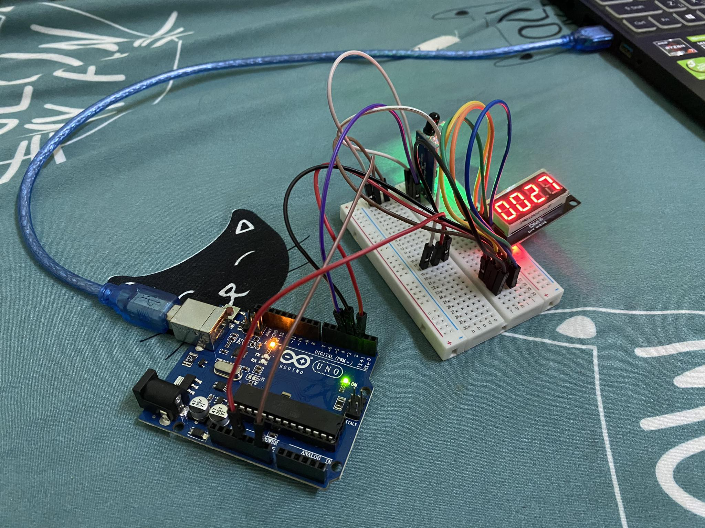

ตัวเครื่อง General Timer ทำมาจากบอร์ด arduino R3
และ Infrared Avoidance Obstacle เป็นเซนเซอร์ตรวจจับระยะใกล้
เพื่อนำมาใช้จับการเคลื่อนไหวของมือเมื่อเข้าใกล้ตัวอุปกรณ์ ในการ
จับเวลาของการทำงานโดยเวลาที่ถูกตั้งไว้ของเครื่องคือ 1 ชั่วโมง
อุปกรณ์
บอร์ด Arduino
Infrared Avoidance Obstacle
7-Segment 4
